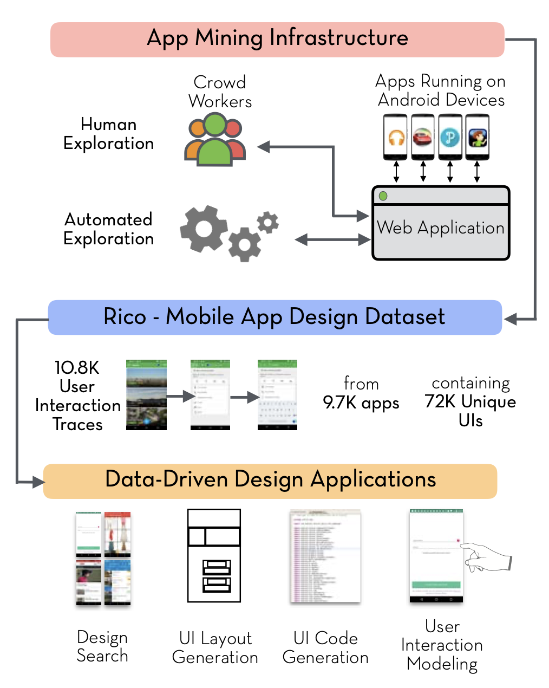
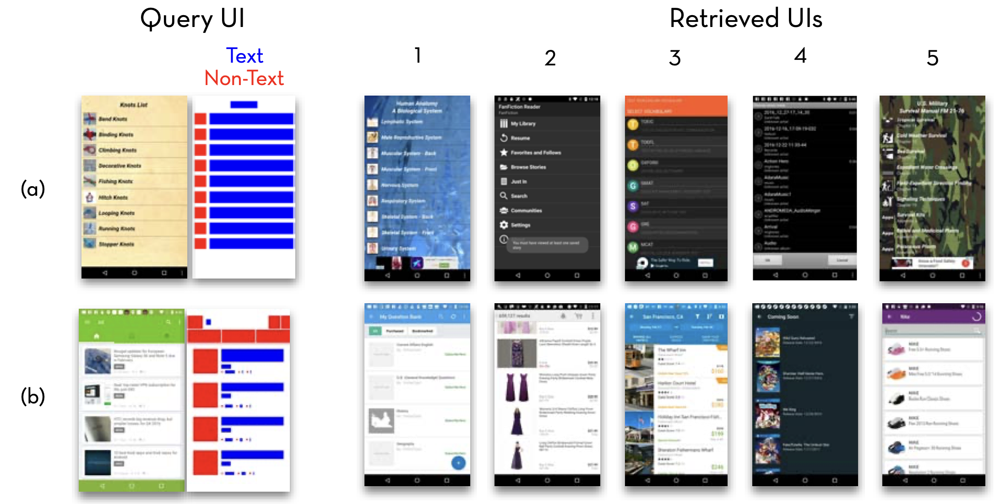
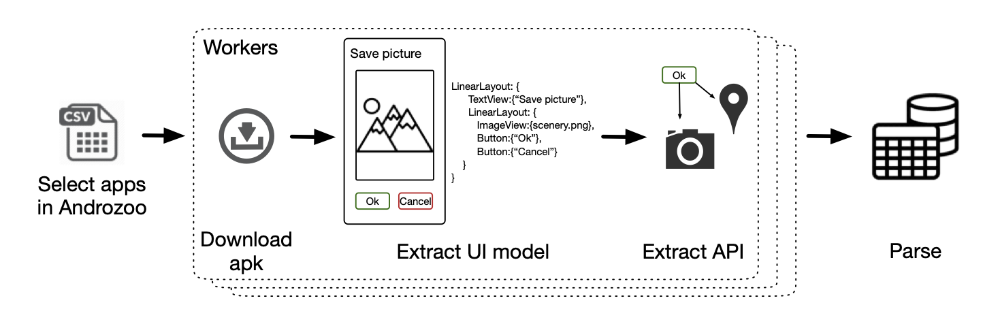
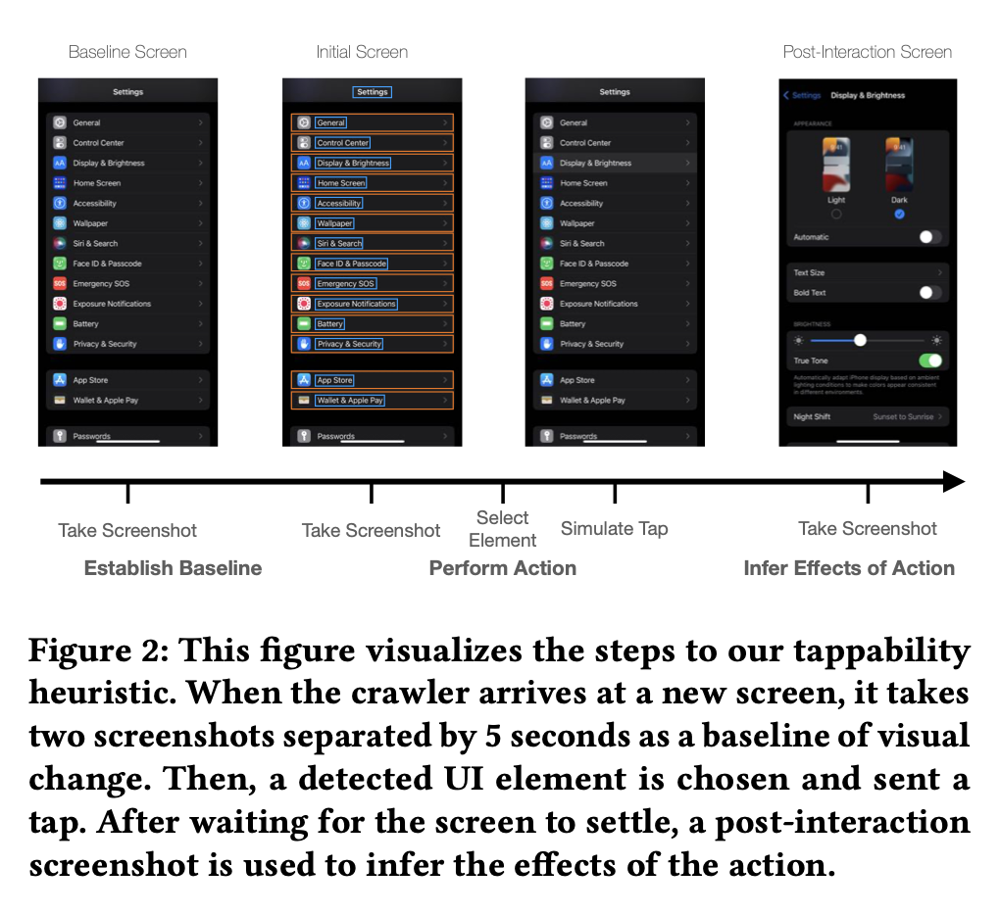

I work on software.
Imagine if you could say to ChatGPT, "Go try out my app for 5 minutes and let me know what you think about the getting started experience." Or if you could ask questions like... Does my iOS app's GUI follow common practices? Is it accessible? What are some examples of apps that use these specific UI controls on the same screen?
If we had a rich database of app GUIs and the right ML models, then we could answer these questions and build a copilot tool that "understands" the visual and interaction designs of GUIs, not just the code!
There have been many attempts to build a database of GUIs. Though, most of them have done so statically by analyzing the source code or bytecode of the app. This has all sorts of limitations: requiring the code, only being able to analyze view hierarchies, and ignoring anything with complex UIs (like drawing on a canvas) that are generated at runtime. Many also require human labelers.
There was a paper at UIST'17 that made huge progress towards such a database: Rico: A Mobile App Dataset for Building Data-Driven Design Applications by Deka et al. (ACM).
Their system automatically runs many, many Android apps and elicits interactions from crowdworkers. They collected 72,000 interfaces from 9,700 apps. Then they used the data to train an encoding model to learn embeddings for UI layouts. It can be used to search for UIs:
Then at FSE'21, Frontmatter: Mining Android User Interfaces at Scale by Kuznetsov et al. (ACM) took the research area a major step forward. They contributed a public dataset of GUI data that was statically analyzed from 160,000 Android apps without the need of human labelers.
More recently, Never-ending Learning of User Interfaces by Wu et al. (ACM) was published at UIST'23. They designed an app crawler that installs real apps from the Apple app store and crawls them to learn about the UIs. It uses different heuristics for interacting with UI elements to update its machine learning models as it crawls.
For example, it takes screenshots of the screen, uses existing models to identify UI elements, then taps or drags an element that it thinks can be interacted with, and based on the effect, will update the model to learn that the element is tappable or draggable. So far, they have used a farm of iPhones to perform more than 500,000 actions on 6,000 apps.
With research like this, we are close to having AI that can fully test an application almost as if they are human. There is still the need for a decision-making layer that emulates which UI element to interact with. That way it can test specific tasks rather than poking things at random.
Decades ago, Chi et al. used information foraging theory to accurately predict how users would navigate a webpage (see their CHI'01 paper). This approach applied to standard user data that these apps collect (i.e., screens viewed and buttons clicked with timestamps) could be used to train a decision-making model for GUIs.
So, who will build a copilot that supports reasoning about and interacting with GUIs in real time?